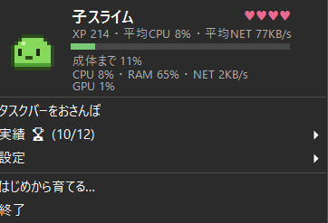

あなたの毎日が、
この子の一生になる。
むずかしい操作はいりません。いつもどおりPCを使うだけ。 ゲームで遊んだ日も、資料づくりに追われた日も、つい夜ふかしした日も — その全部が、タスクバーの片隅で暮らすちいさなスライムの個性になっていきます。
トレイの1マスに、驚くほどたくさんの生活があります。
重い処理中はぷよぷよ跳ねまくり、暇なときはのんびり。PCの「今」がそのまま動きに出ます。
タスクバーの上端を歩いてマウスカーソルを追いかけます。ジャンプして、時々すわって休憩も。
クリックでなでるとハートを出して喜び、なつき度が育つ。ドラッグでつまむとジタバタします。
はじめての孵化から全属性コンプリートまで。育てなおしても実績は消えません。
CPU / RAM / GPU / 温度 / 通信速度をトレイから常時確認。メモリ逼迫やディスク残量僅少も知らせます。
ライト/ダークテーマ自動追従、日英UI、休憩リマインダー。軽量・低負荷で作業を邪魔しません。
スライムはPCの稼働で経験値を貯めて育ちます。最終進化を決めるのは、あなたの使い方そのもの。
高負荷な使い方 — ゲームや動画編集の日々が、溶岩の殻になる。
省エネな使い方 — 静かで穏やかな時間が、氷の王冠になる。
ネットをよく使う — 流れ続けるデータが、稲妻のアンテナになる。
夜ふかし派 — 深夜0時から5時の稼働が、星のきらめきになる。

トレイアイコンをクリックすれば、いまの暮らしぶりがひと目でわかります。
XP、なでた回数ぶんのハート、成体までの進化ゲージ。そのすぐ下にCPU / RAM / GPU / ネットワークの実況が同居する、ちいさなダッシュボードです。
実測CPU使用率は約0.4%。常駐していることを忘れるほど軽く、それでいて、ふと目をやるといつもそこにいます。
TrayLifeは個人情報を一切収集せず、インターネット通信も行いません。 読み取るのはお使いのPC内の使用状況(CPU / メモリ / GPU / ネットワーク速度)だけ。 その数字がPCの外に出ることは、決してありません。